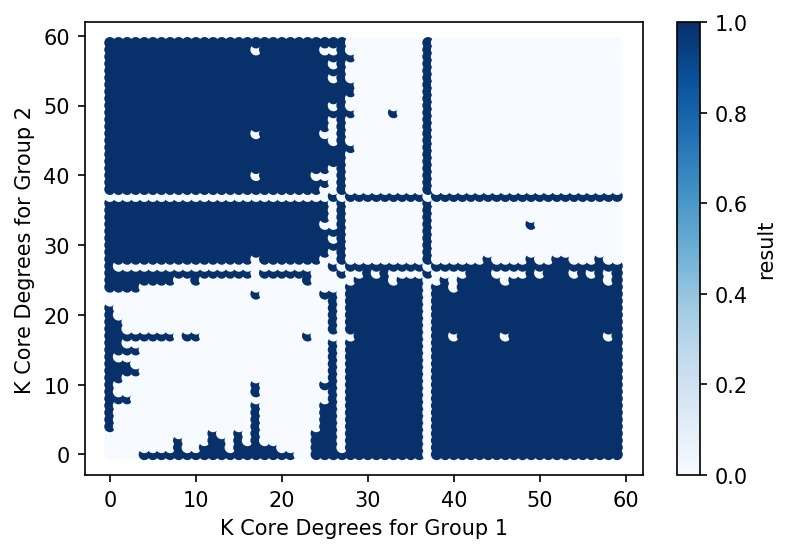

Misinformation, just as viruses, spread via the channel created through human interaction and communication. With the advancement of technology and the internet, online media and social platforms have become the dominant approach for information intake and exchange. While social media greatly enhance the efficiency of spread of information, little fact checking is done to ensure the accuracy of the statement posted online. Misinformation presents challenges for free change of opinions and popularization of science. When it comes to public health, it can even endanger the lives of people. The total amount of misinformation grows exponentially during covid pandemic over the last two years, including the denial of existence of covid 19, rejection of covid vaccine and exaggeration of possible side effects, and anti mandatory mask requirements in public.
People are also eaily getting angry, depression and other kind of negtaive emotion under the covid-19 situtaion. This is also an obvious phenomenon on the website. People spread worries about shortage of food, water and other daily use artciles. They also worry about lossing their jobs. And most importantly, they worry about lossing their lives. Under the worries, other negative emtion spread at the same time. People become irrtable. They attack each other on the social media. They arguing on the policy, and they debate with the relevant topics.
However, in 2022 and we are lived under the influence of covid for about 2 years. And we recall our action and worries for the last two years. Are we excessively worry about the situtaion? And thinking about the last two years, there is some misinformation messages drive people worry about the situtaion. We are wondering is the misinformation spread on spefic groups? If people become worry and have other negative sentiment are guided by some groups?
The project is conducted using Twitter dataset related to Covid 19 to advance the understanding of the pattern of misinformation transmission with social networks. Two main directions are investigated in the project. The first direction is the analysis of the effect of bot users on the spread of misinformation: We want to explore what is the role that robot user plays in spreading the misinformation. Where are the bot users located in the social network. The second direction is the sentiment analysis that examines users' attitudes towards misinformation: We want to see the spread of sentiment with differnt places in social networks. We also mixed the two directions: What is the relationship between bot-users with postive and negative emtions? Since online social medias users form social networks, the project also seeks to investigate the effect of social network on the above two topics. Moreover, the project is also interested in exploring the change in proportion of bot users and users' attitude towards misinformation as the social network becomes more concentrated and tightly connected.
The data source is from Panacea Lab. This dataset is an open resource towards researchers. It provides the tweets IDs for posts related to covid 19. The tweet IDs are stored as the date the tweets are made. Panacea Lab collected about 252 million tweets and retweets from the 2020-03-22 to 2022-01-01. The project randomly samples 2 million tweets from the original dataset and conducts twitter hydration to get complete details of the tweets.
Misinformation identification is conducted based on the url included in tweets. The first step is the extraction the url inside the tweet object, then conduct urlparse to find the root directory of the website. The website (https://iffy.news/iffy-plus/) contains a dataset of regularly publish mis/disinformation, as identified by major fact-checking and journalism organizations. Then a dataset contains contains all the identified fact checking website by gathering fact checking url online. Extracted url is compared with the misinformation dataset and fact checking website, and if the url is inside the dataset, it is determined that tweet contains misinformative website.
Bot detection is conducted using an existing bot detection model for tweeter account called "Botometers" (https: //github.com/IUNetSci/botometer-python) . The model takes the user id, and output the scores related to spam account as well as the cap as rubrics to determine of an account is a bot. The specific returned information contains two main parts: English (information for English tweets) and Universal (information for every language else). For each of the two main parts, the model returns fake follower, self declared bots from botwiki.org, manually labeled political bots and accounts involved in follow trains that systematically delete content, accounts labeled as spambots from several datasets, and a overall score for botscore. All data returned from the model is stored into a json file. The overall scores is comapred with the returned cap value, if either English or Universal overall scores exceeds the cap value, the account is claimed to be operated by bot.
Pre-trained model from TweetEval is used in NLP process. Raw Twitter text is cleaned before it's feed into the model. User names with the word "user" are removed to prevent the influence on the results of sentiment analyze. Links from tweets is also removed for the same reason. Since the pre-trained model is trained with only English, tweets that are not written in English are removed. This action should not exert significant influence the final result, since the percentage of tweets which contains foreign languages is low to none (about less than 0.005 percentage). The pre-trained model will return a set of results which has 3 values target to the percentage of postive, netural, and negative emtions in the sentence. We will analzye the result based on the returned values.
Number of Tweets by the Same Author
K Core Decomposition
The majority of users have only a few tweets, while a small proportion of users actively post tweets. The original dataset contains tweets and retweets; the proportion of retweets is 0.75. Most of the users have the tweet with length than 380 characters which it's within the processing limit of NLP model.
For K Core Decomposition, as the number of k increases, the total number of nodes inside the social network decreases significantly.
The proportion of tweets that contain an URL is 0.3658, with only 33.12% of the url in the overall dataset could successfully conduct HTTP requests. Among the url that conducted HTTP request, 0.1% contains misinformation, and 0.0019% contains fact checking information. The difference between misinformation and fact checking tweet is large. It’s likely due to the size difference between two database, the misinformation database contains more urls than the fact checking database. Our ways of checking misinformation is not very effective, so we will keep on our analyze with the result of this referecence papaer: https://journals.plos.org/plosone/article?id=10.1371/journal.pone.0196087 Based on this website, the misinformation is centered at the core of social network.
In general, majority of tweets are neutral, and proportion of negative tweets outweights the proportion of positive tweets.
Looks like the topic relvant to topci is always come with netural and negative sentiments, and rarely with the positive sentiments.
When the degree of k core increases, the negative level increase and netural level decrease. That means when we approaching to the core part of the social network, the people become more negative.
While we know that the core part of social network is also where the misinformation condensly located.
SO, this phenomen could means users in the center of the social structure tends to have negative reaction because they are being exposed to misinformation.
This graph obviously shows the corelation decreases when the number of degree increase.

Here we can obviously know that the there is mainly two groups of different kinds of users. The users